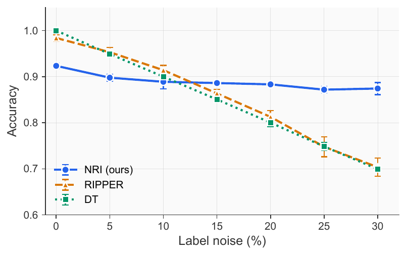
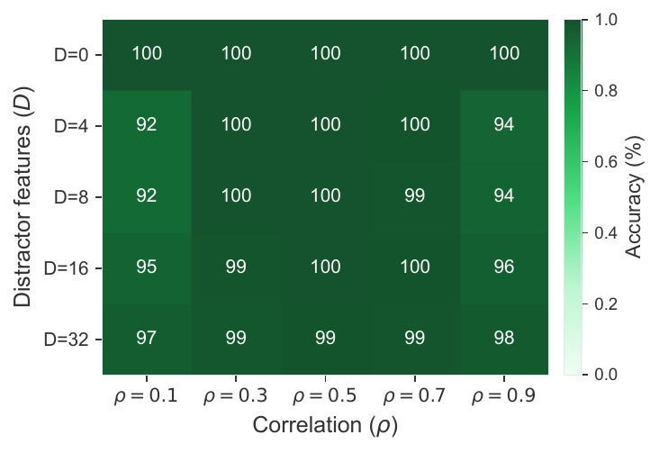
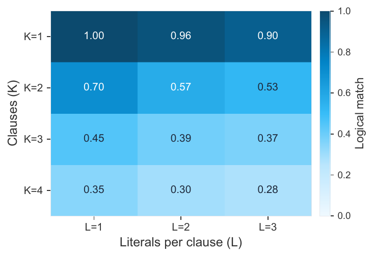
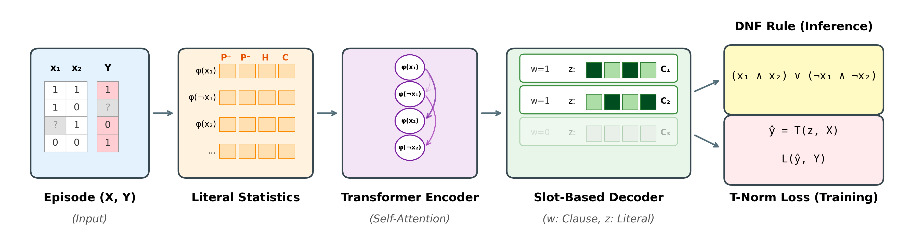

Trained once on synthetic Boolean formulas, NRI induces interpretable DNF rules zero-shot on any tabular task. No retraining, no fine-tuning, no per-task weights.
NRI is trained only on random synthetic Boolean formulas with $N \in [6, 12]$ variables. It is then applied directly to 14 UCI tabular tasks, with no retraining and no per-task fitting. 12 of those 14 tasks have more features than the training range, so most of this is genuine out-of-distribution transfer. Baselines are trained per dataset; NRI uses a single checkpoint everywhere.
| Dataset | $N$ | EBM (per-task) | RIPPER (per-task) | NRI (zero-shot) |
|---|---|---|---|---|
| diabetes | 8 | 66.9 | 66.8 | 68.0 |
| breast-cancer | 9 | 93.0 | 88.3 | 88.3 |
| vote | 32 | 87.4 | 91.6 | 88.3 |
| mushroom | 116 | 99.4 | 98.5 | 87.8 |
| kr-vs-kp | 73 | 92.5 | 89.9 | 72.3 |
| credit | 46 | 82.2 | 83.1 | 71.5 |
| nursery | 27 | 91.1 | 86.2 | 71.3 |
| spambase | 57 | 91.1 | 85.7 | 71.9 |
5-fold stratified CV accuracy (%). NRI reaches 69.7% on average across all 14 tasks, 13 points behind EBM (which is trained per dataset). NRI is strongest on the two in-distribution tasks ($N \leq 12$) and beats every per-task baseline on diabetes. See the paper, Table 1, for the full comparison against XGBoost, LightGBM, EBM, RIPPER, RuleFit, FIGS, DT, and N-DNF.
This is where NRI most clearly outperforms classical rule learners. Symbolic methods fit their training data exactly and pay for it the moment labels are noisy. NRI's statistical encoding acts as implicit regularization, so accuracy degrades smoothly instead of falling off a cliff.

Real datasets are full of features that correlate with the label but should not appear in the rule. We append $D$ distractor features that correlate with the label at strength $\rho$ while having no causal relationship. NRI has to learn to ignore them.

We measure exact logical equivalence between predicted and ground-truth rules across rule complexity dimensions $K$ (number of clauses) and $L$ (literals per clause).

The point of this work is not a number on a leaderboard, it is the rule itself. Each card below shows the DNF that NRI produced for a UCI task in a single forward pass, with no fine-tuning. The rules are short, readable, and align with what a domain expert would write down. This is what zero-shot interpretable induction looks like in practice.
All rules above are produced by the same checkpoint, with no per-task fine-tuning. The full set of 14 rules (including the multi-class breakdowns for car and nursery) is in Appendix B.
For thirty years, practitioners faced a forced choice. Want a model you can read? Use a decision tree or an ILP system, and accept that you will retrain it from scratch on every dataset, that it will overfit noisy labels, and that it will not transfer anything it learned on one problem to the next. Want a model that scales? Reach for gradient boosting or a deep network and explain the predictions with post-hoc tools you cannot fully trust.
NRI removes that trade-off. The model is general (one checkpoint, many domains), the output is symbolic (a DNF formula you can paste into a slide), and the reasoning is grounded in the data rather than in language priors.
Run NRI on a fresh tabular dataset and get a candidate rule in a single forward pass. Domain experts can then accept, refute, or refine it, treating the model as a fast first-pass analyst rather than a black box that needs to be re-trained, re-tuned, and re-validated for every new question.
Because NRI emits an explicit DNF, the rule itself is the audit trail. There is no need for SHAP, LIME, or counterfactual explainers: the rule that produced the prediction is the explanation, and it is the same rule on every example.
Statistical encoding gives NRI implicit regularization. Where symbolic rule learners memorize noise, NRI's accuracy degrades smoothly, making it usable in settings where labels come from human raters, weak supervision, or imperfect logging pipelines.
NRI is trained against environment-dependent distractors, so it learns to prefer features whose predictive power survives a change in environment. This is the same property that domain-generalization methods aim for, achieved here as a byproduct of how the model is pretrained.
Vision and language each have foundation models. Symbolic reasoning does not. NRI is a step toward that: a single model whose pretraining objective is induction itself, ready to be extended to multi-valued attributes, continuous variables via discretization, and eventually first-order relational rules.
The whole architecture is built around one principle: never look at variable names. Anything tied to specific predicates would prevent transfer to new domains, so NRI replaces identities with statistical signatures and replaces ordered generation with parallel slots.

Each literal $l_j$ is described by 18 identity-free statistics: class-conditional truth rates $P(l_j \mid y{=}1)$ and $P(l_j \mid y{=}0)$, marginal entropy $\mathcal{H}(l_j)$, polarity, observation rates, and mean co-occurrence with other literals. Two literals with the same statistics are interchangeable from NRI's point of view, which is exactly the invariance we want for transfer.
An autoregressive decoder would force a left-to-right order on a disjunction $C_1 \lor \ldots \lor C_K$, which has none. Instead, $K$ learned slot queries decode all clauses in parallel under FiLM modulation, preserving permutation invariance while letting different slots specialize.
Literal gates $z_{k,j}$ and clause gates $w_k$ define a soft DNF that is executed under the product T-norm. Conjunctions become products, disjunctions become probabilistic OR, and the entire pipeline from raw episode to predicted label is differentiable. Discretizing the gates at inference yields the symbolic rule.
NRI is trained on millions of randomly generated DNFs with up to $K{=}6$ clauses and $L{=}4$ literals. Each episode also injects spurious environment features with opposite correlations across two halves of the data, forcing the model to rely on causal signal rather than marginal correlation. No real-world supervision is used.
TBD — will be updated once the official IJCAI 2026 proceedings citation is available.